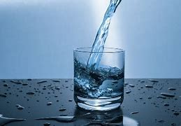
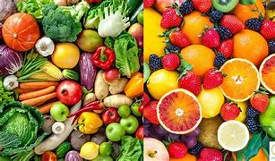
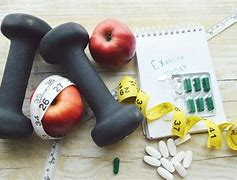
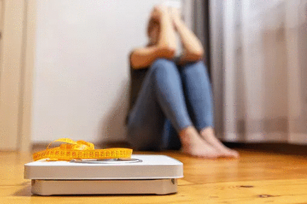

Az egyéni folyadékbevitel elsősorban az életkortól és a nemtől függ, de a testsúly, az évszak, a fizikai aktivitás, sőt, az egészségi állapot is befolyásolhatja. Egy vékony, ülőmunkát végző nőnek például sokkal kevesebb folyadékra van szüksége, mint egy nagyobb darab, nehéz fizikai munkát végző férfinak, akinek nyáron akár 3-4 liter vizet is meg kellene innia. Vízhiány megemelheti a vérnyomást, okozhat fejfájást, fáradtságot.
Nem csak, hogy jó vitamin forrás, akár segíthet ez is a folyadék bevitel növelésén, akár egy smoothie, leves megfelelhet egy étkezésnek.
Egy héten maximum 1-2-szer együnk édességet, ne helyettesitsünk édességgel egy étkezést sem! Gyorsan felszívódó szénhidrátot tartalmaznak, ami csak pillanatnyira emeli meg az energia szintet.
Igen a kávé és az energiaital tartalmaz koffeint, amitől kevésbé érezük magunkat fáradtnak, de nem alkalmas arra, hogy a szervezetünk energia- és tápanyag igényét kielégítse és el is von folyadékot a szervezetből.
Ha kevesebbszer eszünk többet, az a vércukorszintet hirtelen megemelheti, ezért ajánlott a napi inkább 5-szöri étkezés. Aki fogyni szeretne, annak nem feltétlenül ott kell keresse a megoldást, hogy lejjebb csökkenti az étkezések mennyiségét, mert ennek lehetnek súlyos következményei, ha túlzásba visszük, illetve ezzel nem is lehet hosszú távon fogyni vagy súlyt tartani. A fogyásra is vannak természetesebb, egészségesebb utak, inkább azokat válasszuk, ne legyenek irreális céljaink!
Vezethet: rosszulléthez, gyengeséghez, fáradtsághoz, akár vitaminhiányhoz, tápanyaghiányhoz, teljesítmény romláshoz.
Az egyik legrosszabb taktika a tartós böjtölés. A rendszertelen éhezés, kihagyott étkezések hatására mind a testi, mind a szellemi teljesítmény csökken, és bár fogyás történhet, a szervezet ilyen helyzetben az izmot is bontani fogja, illetve, ha abbahagyjuk a koplalást, egyből fellép a jojó-effektus, és zsírt kezdünk raktározni. Kerüljük az olyan módszereket, melyek az étkezések kihagyását javasolják vagy "bűnözési napot" iktatnak be, nagy zabálásokat engedélyeznek a szigorú tápanyagmegvonások közé. Ne feledd: egy-egy kilengés vagy süti nem fog kárt okozni, de a szélsőséges módszerek igen.
Lehet azt gondoljuk: ,,Nem olyan nagy dolog, ha fáradt vagyok csak iszok egy kávét." vagy ,,Ha fáj a fejem beveszek fájdalom csillapítót.", de, ha rossz détát választunk, könnyen árthatunk magunknak ezzel, illetve, ha már minden naposak a fájdalmak, egy idő után a gyógyszerek hatástalanná válnak.
Több féle evészavarhoz vezethetnek, aminek két fő típusa van: az anorexia (kóros soványság) és a bulimia (kóros falánkság).
Ha a személy gondolkodása nem változik, akkor vissza fog esni, vagy tünetet fog váltani, de az is lehet, hogy a testi tünetei elmúlnak, azonban egy önmagával állandóan elégedetlen, boldogtalan, az életet nem szerető és a lehetőségeit ki nem használó ember fog rá visszanézni a tükörből, akinek az evéssel és a testsúlyával való foglalkozás kiemelt helyet fog kapni az életében.
Igen az édességek nagy része hízlal és gyorsan felszívodó szénhidrátot tartalmaz, de vannak olyan édességek, amik kevésbé hízlalnak és lassan felszívódó szénhidrátot tartalmaznak, ezekben például cukor helyett édesítőszert van vagy csokinál minnél magasabb a kakaó tartalom annál jobb, péksüteménynél fehér liszt helyett teljes kiörlésű lisztet tartalmazót keressük.
Jó vitamin forrás, a gyümölcsölcsök, zöldségeknek kedvező egészségi hatása van, jó párnak alacsony a kalória tartalma.
Lassan felszívódó szénhidrátot tartalmaz, sok rostot tartalmaz, kevésbé emeli meg a vércukorszintet.
Magas a fehérje tartalma, ami jó hatással van a sejtekre, könnyen emészthető.
Alacsony zsír tartalmú, omega 3 vitamint tartalmaz, koleszterin szegény.